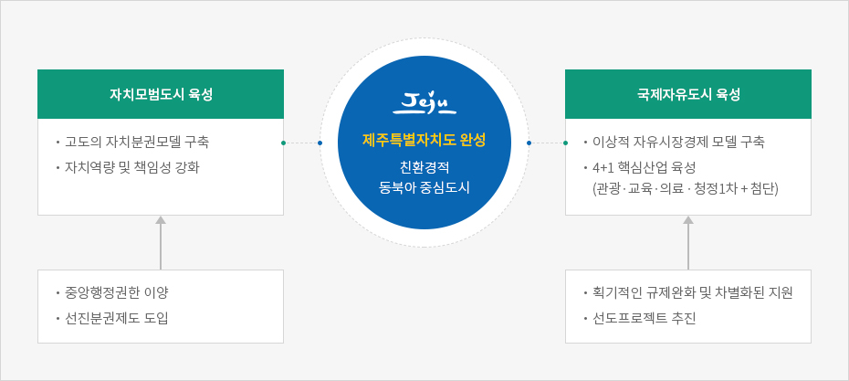

제주특별자치도
- Home
- 일반현황
- 행정·경제
- 제주특별자치도
대한민국 자치분권의 선도모델 제주특별자치도
특별자치도란?
특별자치도는 일반적인 도에 부여된 권한과 달리 고도의 자치권이 보장된 지역으로, 지역 여건과 특성에 부합하는 특례를 부여받아 자율적인 정책 결정과 책임 하에 지역을 경영하는 특별지역을 말합니다.
※ 특별자치도는 광역지방자치단체의 한 종류로 「지방자치법」제2조 제1항 지방자치단체는 다음의 두 가지 종류로 구분한다.
- 1. 특별시, 광역시, 특별자치시, 도, 특별자치도
- 2. 시, 군, 구
제주특별자치도란?
제주도의 지역적ㆍ역사적ㆍ인문적 특성을 살리고 자율과 책임, 창의성과 다양성을 바탕으로 고도의 자치권이 보장되는 제주특별자치도를 설치하여 실질적인 지방분권을 보장하고, 행정규제의 폭넓은 완화와 국제적 기준의 적용 및 환경자원의 관리 등을 통하여 경제와 환경이 조화를 이루는 환경 친화적인 국제자유도시를 조성하고, 이를 통해 도민의 복리증진과 국가발전에 이바지함을 목적으로 하고 있습니다.제주특별자치도의 시작
2006년 2월 9일 국회 본회의에서 「제주특별자치도 설치 및 국제자유도시 조성을 위한 특별법」이 통과됨으로써 2006년 7월 1일부터 종전의 ‘제주도’는 ‘제주특별자치도’로서의 새로운 법적 지위와 명칭을 가진 지방자치단체로 출범하였습니다.
이에 따라 자치입법권을 비롯하여 자치행정권, 자치조직·인사권 및 자치재정권 등 자치권을 보유하였습니다. 또한 다른 일반 지방자치단체와는 달리 교육 자치 제도가 일반 자치에 통합되고 자치경찰제가 도입되는 등 선진적인 지방 분권 모델을 구축하였습니다.
제주특별자치도의 현황
특별자치도 출범 후 10여 년간 4,660건의 중앙권한이 이양돼 제주형 자치제도를 만들어 가고 있습니다. 이를 통해 관광산업을 비롯한 교육 및 의료산업, 청정 1 차산업, 첨단 산업 등 제주지역 핵심산업 육성과 친환경 산업발전의 토대가 되고, 국제화 및 지방분권의 선도적인 역할 모델을 구현하고 있습니다. 제주특별자치도의 기본구상


제주특별자치도 완성 - 친환경적 동북아 중심도시
-
자치모범도시 육성
- 고도의 자치분권모델 구축
- 자치역량 및 책임성 강화
- 중앙행정권한 이양
- 선진분권제도 도입
-
국제자유도시 육성
- 이상적 자유시장경제 모델 구축
- 4+1 핵심산업 육성 (관광·교육·의료 · 청정1차 + 첨단)
- 획기적인 규제완화 및 차별화된 지원
- 선도프로젝트 추진